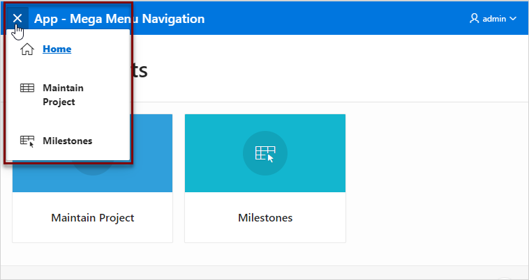

18.11.8 Managing Navigation Menus
Applications using newer themes, such as Universal Theme - 42, provide navigation with navigation menus.
- About Navigation Menus
- Editing Navigation Menu Lists
- Changing Where and How Navigation Menus Display
- About Switching from Tabs to Navigation Menus
Parent topic: Creating Lists
18.11.8.1 About Navigation Menus
A navigation menu is list with hierarchical list entries. When you create an application, the Create Application Wizard automatically creates a navigation menu for you and populates it with list entries linking to the application pages you have created. Navigation menus are controlled at the theme and user interface level. You can change how and where a navigation menu displays by editing Navigation Menu attributes on the User Interface page.
Types of navigation menus include Side Menu, Top Menu, or Mega Menu. Navigation menus are controlled at the theme and user interface level. You can change how and where a navigation menu displays by editing Navigation Menu attributes on the User Interface page.
Side Navigation Menu
Users can expand or collapse the Side Navigation Menu by clicking on the menu icon from the header. This navigation menu renders the navigation items using a tree component that enables users to expand or collapse sub items. Based on the available space, Side Navigation Menu displays a full menu (as show below), or collapses to a narrow icon bar. You can also configure a navigation menu to be completely hidden (default) or to display a narrow icon bar when collapsed using Template Options.
The following example shows an application with a Side Navigation Menu.
Description of the illustration nav_side_menu.png
Top Navigation Menu
A Top Navigation Menu displays at the top of the application. You can control how the menu displays by choosing between two templates:
-
Top Navigation Tabs - The Top Navigation Tabs template renders your application navigation as tabs and is ideally suited for simple applications where you have six or fewer tabs. This template automatically positions to the bottom of the screen for small screen or mobile devices.
-
Top Navigation Menu - The Top Navigation Menu template renders your application navigation as a menu bar, similar to what you find on most desktop applications. Developers commonly use this option for more complex applications with several layers of hierarchy within the navigation.
The following example shows an application with a Top Navigation Menu that uses the Top Navigation Menu template.
Description of the illustration nav_top_menu.png
Mega Menu Navigation
The Top Navigation Mega Menu template renders your application navigation in a pop-up panel that can be opened or closed from the header menu button. Users can expand or collapse a Mega Menu by clicking on the menu icon from the header. Mega menus are especially useful when you want to display all navigation items at once to your user.
The following example shows an application with a Mega Menu using the Top Navigation Mega Menu template.
Description of the illustration nav_mega_menu.png
Parent topic: Managing Navigation Menus
18.11.8.2 Editing Navigation Menu Lists
Since a Navigation menu is a list, you create and edit in the same way as any other list.
You can access Navigation menus in Shared Components in the Navigation region in two ways:
-
Select the application and then click Shared Components. Under the Navigation region, select Navigation Menu.
-
Select the application and then click Shared Components. Under the Navigation region, select Lists.
Once you select the Navigation Menu, you edit it as you would any other list.
See Also:
"Creating Lists"Parent topic: Managing Navigation Menus
18.11.8.3 Changing Where and How Navigation Menus Display
Tip:
You can access the User Interface page from the Application Definition as described in the following procedure, or by navigating to Shared Components, User Interface and selectingUser Interface Attributes.
To edit the Navigation menu attributes:
Parent topic: Managing Navigation Menus
18.11.8.4 About Switching from Tabs to Navigation Menus
You can switch from a theme using tabs to a theme using navigation menus if the existing application used one level of tabs was used. If an existing applications uses two levels of tabs, you must convert it to one level before changing the theme.
See Also:
Parent topic: Managing Navigation Menus